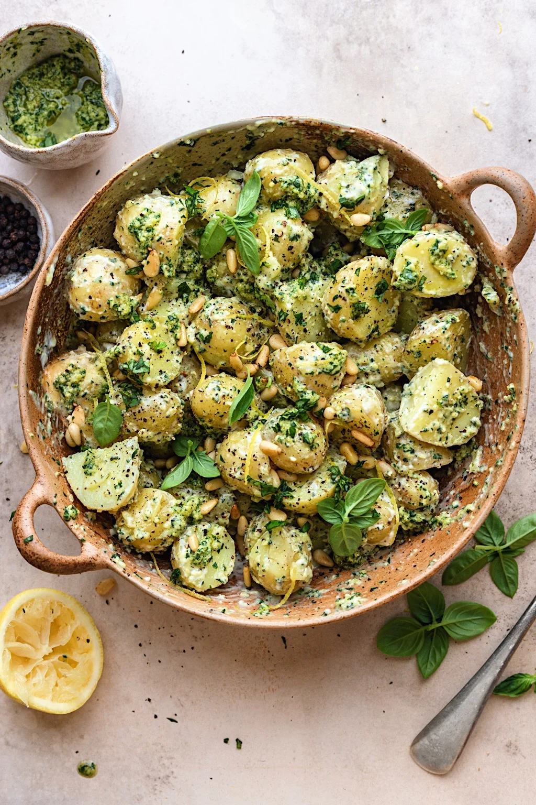

Pesto Potato Salad

Potatoes make me happy. Now they make me happy in a healthier recipe!
We all love a classic potato salad but if you’re looking to switch it up this pesto potato salad is for you! All the flavours of pesto with the added creaminess of vegan mayonnaise. It doesn’t get better!
It’s creamy, lemony, herby, nutty and just damn right delicious. Plus it comes together in 30 minutes!
Ingredients:
- New potatoes – you can use any, jersey royal or British gems are my favourite
- Basil
- Pine nuts
- Nutritional yeast or vegan parmesan
- Lemon
- Garlic
- Olive oil
- Vegan Mayonnaise
- Salt
- Black pepper
Directions:
- Step 1: First start my boiling the potatoes in salted water. You want to make sure you cut the potatoes in similar sizes so they cook evenly.
- Step 2: Whilst the potatoes are cooking, prepare the pesto. Place the basil, pine nuts, nutritional yeast, lemon, garlic and salt in a food processor. Blend until the pine nuts have broken down and all the basil is finely chopped.
- Step 3 Whilst still blending, gently drizzle the olive oil until all combined and smooth. Taste and season with salt and pepper.
- Step 4 Once the potatoes are cooked, drain and then run under cold water to cool them down. Place in a bowl and add the pesto, mayonnaise, lemon zest and toasted pine nuts.
- Step 5 Carefully mix using a large spoon or gently toss the bowl until all combined. Top with some extra chopped basil and black pepper and serve!
Sources